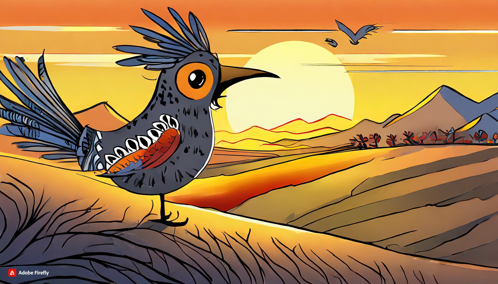

Lorenzo, un Pajaro Loco.
Había una vez un pequeño pájaro llamado Lorenzo que vivía en un bosque encantado. Lorenzo era un ruiseñor con plumas de colores brillantes y un canto tan melodioso que todos en el bosque se detenían a escucharlo cuando comenzaba a cantar. Un día, mientras Lorenzo exploraba el bosque, encontró un misterioso objeto brillante entre las hojas. Era una pequeña llave de oro. Intrigado, Lorenzo decidió seguir su instinto y buscar el lugar al que pertenecía la llave. Volando a través del bosque, Lorenzo descubrió una puerta antigua escondida entre los árboles. La llave encajaba perfectamente en la cerradura, y al girarla, la puerta se abrió lentamente revelando un jardín secreto lleno de flores exóticas y árboles frutales. Dentro del jardín, Lorenzo conoció a otros pájaros encantados que, al igual que él, habían encontrado llaves mágicas y descubierto el lugar secreto. Juntos, decidieron explorar este nuevo mundo, lleno de maravillas y sorpresas. Lorenzo se hizo amigo de un colibrí brillante llamado Aurora, un pájaro carpintero experto en hacer nidos llamado Pablo y una lechuza sabia llamada Olivia. Juntos, vivieron muchas aventuras emocionantes en el jardín mágico, descubriendo lugares ocultos, enfrentando desafíos y ayudándose mutuamente. Un día, mientras exploraban una cascada resplandeciente, descubrieron un nido de pajaritos que necesitaba ayuda. Sin dudarlo, Lorenzo y sus amigos trabajaron juntos para reconstruir el nido y cuidar a los pequeños pajaritos hasta que estuvieron lo suficientemente fuertes como para volar. El jardín mágico se llenó de risas, canciones y amistad gracias a Lorenzo y sus nuevos amigos. Aunque la llave mágica los había llevado a un lugar especial, lo más valioso que encontraron fue la amistad y el compañerismo que compartieron en su viaje. Y así, Lorenzo y sus amigos continuaron explorando el bosque encantado, llevando consigo la magia de la amistad y la melodía de sus cantos, creando un legado de alegría y armonía en el corazón del bosque.
La Navidad de Soledad

Había una vez una niña llamada Soledad que vivía en un pequeño pueblo rodeado de montañas cubiertas de nieve. Aunque la magia de la Navidad llenaba el aire, Soledad se sentía sola, ya que sus padres habían tenido que viajar por trabajo y no podrían estar con ella durante las festividades. Soledad intentaba llenar su hogar con la alegría de la temporada. Decoró el árbol de Navidad con luces brillantes y colgó medias coloridas en la chimenea, pero no podía evitar sentir un vacío en su corazón. Una fría noche de diciembre, Soledad salió a pasear por el pueblo, admirando las luces parpadeantes y la atmósfera festiva. De repente, escuchó risas y canciones provenientes de una acogedora casa cercana. Se acercó y miró por la ventana para descubrir a una familia reunida alrededor de una mesa, compartiendo risas, abrazos y deliciosos manjares navideños. Soledad sintió un nudo en la garganta al ver la calidez y la felicidad que emanaban de esa casa. Se preguntó si algún día tendría la oportunidad de experimentar algo similar. Decidida a no dejar que la tristeza la dominara, continuó explorando el pueblo. Mientras caminaba por las tranquilas calles, una suave melodía navideña llamó su atención. Siguiendo el sonido, llegó a una plaza donde un grupo de personas cantaba villancicos alrededor de un fuego crepitante. Soledad se unió al grupo, y aunque al principio se sentía tímida, la calidez de la música y la compañía empezaron a disolver su soledad. De repente, una voz familiar la llamó desde la multitud. Era su familia, que había regresado sorprendentemente antes de lo esperado. Soledad corrió hacia ellos, envuelta en abrazos y lágrimas de felicidad. Su familia explicó que, al darse cuenta de que la extrañaban demasiado, decidieron regresar a casa para pasar la Navidad juntos. La casa de Soledad se llenó de risas, amor y el reconfortante aroma de la cena navideña. El árbol resplandecía aún más con la presencia de su familia, y las medias colgadas en la chimenea se llenaron de pequeñas sorpresas. Soledad se dio cuenta de que, aunque había comenzado la Navidad sintiéndose sola, el verdadero espíritu de la temporada se encontraba en la compañía de sus seres queridos. Desde esa Navidad en adelante, Soledad aprendió a valorar cada momento con su familia y a compartir la alegría de la temporada con aquellos que necesitaban un poco de calor y compañía. La historia de su Navidad sola se convirtió en un recordatorio de que el amor y la felicidad pueden encontrarse incluso en los momentos más inesperados.